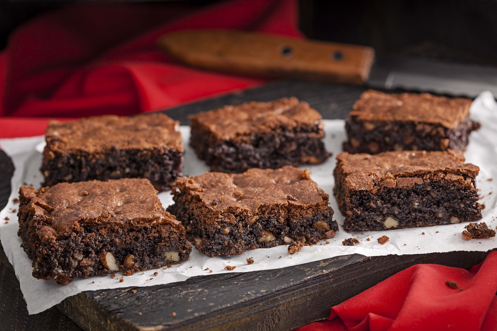

Bolo de Chocolate

Igredientes
Massa
- 3 xícaras (chá) de farinha de trigo
- 2 xícaras (chá) de açúcar
- 1 xícara (chá) de Chocolate em Pó NESTLÉ® DOIS FRADES®
- 1 colher (chá) de fermento em pó
- 1 colher (chá) de bicarbonato de sódio
- 1 xícara (chá) de óleo
- 2 ovos
- 2 xícaras (chá) de água fervente
Cobertura
- 6 colheres (sopa) de açúcar
- 2 colheres (sopa) de Chocolate em Pó NESTLÉ® DOIS FRADES®
- 1 colher (chá) de raspas da casca de laranja
- 1 colher (chá) de manteiga
- meia xícara (chá) de água
Preparo
Massa
- Em um recipiente, misture a farinha de trigo, o açúcar, o Chocolate em Pó DOIS FRADES, o fermento e o bicarbonato peneirados.
- Junte o óleo, os ovos e a água fervente, misturando bem.
- Despeje a massa em uma assadeira retangular (22 cm x 33 cm), untada com óleo, e asse em forno médio-alto (200°C), preaquecido, por cerca de 25 minutos ou até que um palito, depois de espetado na massa, saia limpo. Reserve.
Cobertura
- Em uma panela pequena, misture todos os ingredientes coma água e leve ao fogo baixo, deixando ferver até obter uma calda grossa.
- Retire do fogo e espalhe sobre o bolo ainda quente.
- Deixe-o esfriar, corte em quadrados e sirva.
Brownie

Igredientes
Massa
- 3 xícaras (chá) de farinha de trigo
- 5 Colheres (chá) de açúcar
- 1 xícara (chá) de Chocolate em Pó NESTLÉ® DOIS FRADES®
- 1 xícara (chá) de óleo
- 2 ovos